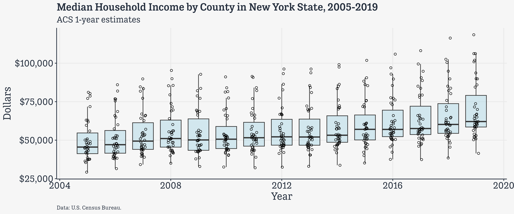
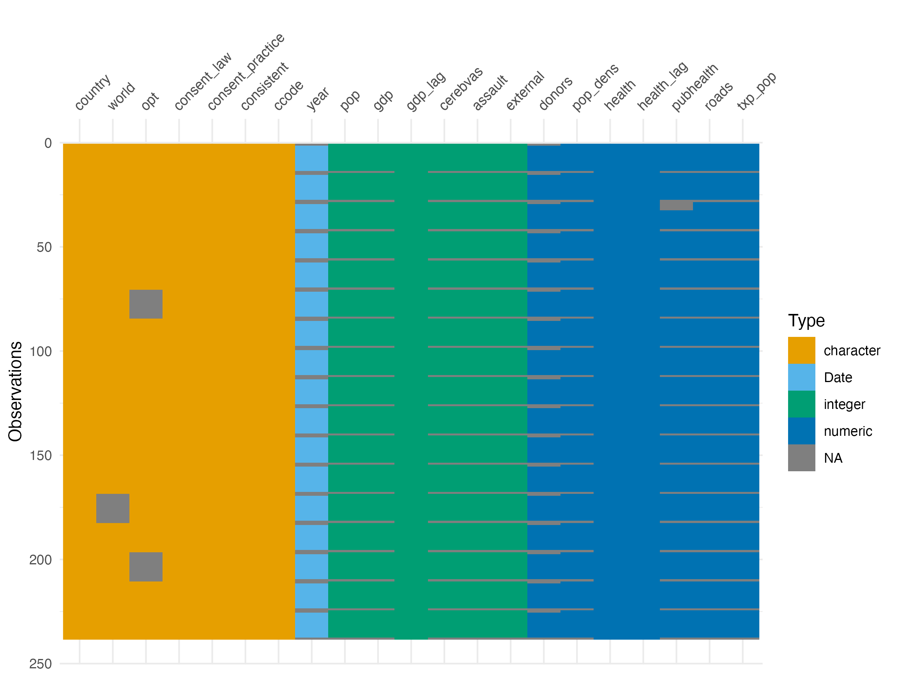
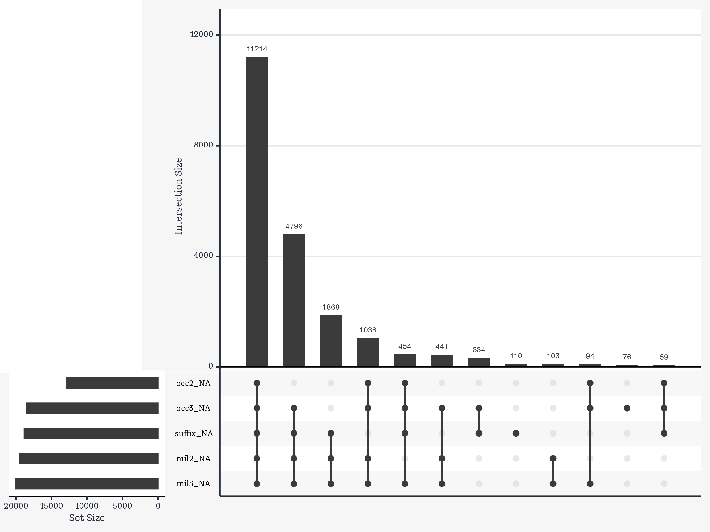

library(here) # manage file paths
library(socviz) # data and some useful functions
library(tidyverse) # your friend and mineIterating on Data
Data Wrangling, Session 7
Kieran Healy
Code Horizons
January 2026
Iterating on data with purrr and map
Load the packages, as always
Moar Data
More than one data file
- Inside the
data/folder of the course packet is a folder namedcongress/
/Users/kjhealy/Documents/courses/data_wrangling/data/congress
├── 01_79_congress.csv
├── 02_80_congress.csv
├── 03_81_congress.csv
├── 04_82_congress.csv
├── 05_83_congress.csv
├── 06_84_congress.csv
├── 07_85_congress.csv
├── 08_86_congress.csv
├── 09_87_congress.csv
├── 10_88_congress.csv
├── 11_89_congress.csv
├── 12_90_congress.csv
├── 13_91_congress.csv
├── 14_92_congress.csv
├── 15_93_congress.csv
├── 16_94_congress.csv
├── 17_95_congress.csv
├── 18_96_congress.csv
├── 19_97_congress.csv
├── 20_98_congress.csv
├── 21_99_congress.csv
├── 22_100_congress.csv
├── 23_101_congress.csv
├── 24_102_congress.csv
├── 25_103_congress.csv
├── 26_104_congress.csv
├── 27_105_congress.csv
├── 28_106_congress.csv
├── 29_107_congress.csv
├── 30_108_congress.csv
├── 31_109_congress.csv
├── 32_110_congress.csv
├── 33_111_congress.csv
├── 34_112_congress.csv
├── 35_113_congress.csv
├── 36_114_congress.csv
├── 37_115_congress.csv
└── 38_116_congress.csvMore than one data file
Let’s look at one.
# A tibble: 6 × 25
last first middle suffix nickname born death sex position party state
<chr> <chr> <chr> <chr> <chr> <chr> <chr> <chr> <chr> <chr> <chr>
1 Abdnor James <NA> <NA> <NA> 02/1… 11/0… M U.S. Re… Repu… SD
2 Abourezk James George <NA> <NA> 02/2… <NA> M U.S. Se… Demo… SD
3 Adams Brockm… <NA> <NA> Brock 01/1… 09/1… M U.S. Re… Demo… WA
4 Addabbo Joseph Patri… <NA> <NA> 03/1… 04/1… M U.S. Re… Demo… NY
5 Aiken George David <NA> <NA> 08/2… 11/1… M U.S. Se… Repu… VT
6 Akaka Daniel Kahik… <NA> <NA> 09/1… 04/0… M U.S. Re… Demo… HI
# ℹ 14 more variables: district <chr>, start <chr>, end <chr>, religion <chr>,
# race <chr>, educational_attainment <chr>, job_type1 <chr>, job_type2 <chr>,
# job_type3 <chr>, job_type4 <chr>, job_type5 <lgl>, mil1 <chr>, mil2 <chr>,
# mil3 <chr>We often find ourselves in this situation. We know each file has the same structure, and we would like to use them all at once.
Loops?
How to read them all in?
One traditional way, which we could do in R, is to write an explicit loop that iterated over a vector of filenames, read each file, and then stack the results together in a tall rectangle.
## Pseudocode (i.e. will not really run)
## Also, if you do write loops, do not use them to grow dataframes in this way.
filenames <- c("01_79_congress.csv", "02_80_congress.csv", "03_81_congress.csv",
"04_82_congress.csv" [etc etc])
collected_files <- NULL
for(i in 1:length(filenames)) {
new_file <- read_file(filenames[i])
collected_files <- append_to(collected_files, new_files)
}
Loops?
- You may have noticed we have not written any loops, however.
- While loops are still lurking there underneath the surface, what we will do instead is to take advantage of the combination of vectors and functions and map one to the other in order to generate results.
- Speaking loosely, think of
map()as a way of iterating without writing loops. You start with a vector of things. You feed it one thing at a time to some function. The function does whatever it does. You get back output that is the same length as your input, and of a specific type.
Mapping is just a kind of iteration
- The
purrrpackage provides a big family of mapping functions. One reason there are a lot of them is thatpurrr, like the rest of the tidyverse, is picky about data types. - So in addition to the basic
map(), which always returns a list, we also havemap_chr(),map_int(),map_dbl(),map_lgl()and others. They always return the data type indicated by their suffix, or die trying.
Vectorized arithmetic again
The simplest cases are not that different from the vectorized arithmetic we’re already familiar with.
R’s vectorized rules add b to every element of a. In a sense, the + operation can be thought of as a function that takes each element of a and does something with it. In this case “add b”.
Vectorized arithmetic again
We can make this explicit by writing a function:
Vectorized arithmetic again
We can make this explicit by writing a function:
Now:
Vectorized arithmetic again
Again, R’s vectorized approach means it automatically adds b to every element of the x we give it.
Iterating in a pipeline
Some operations can’t directly be vectorized in this way, which is why we need to manually iterate, or will want to write loops.
# A tibble: 1 × 5
country_n continent_n year_n lifeExp_n population_n
<int> <int> <int> <int> <int>
1 142 5 12 1626 4060That’s tedious to write! Computers are supposed to allow us to avoid that sort of thing.
Iterating in a pipeline
So how would we iterate this? What we want is to apply the n_distinct() function to each column of gapminder, but in a way that still allows us to use pipelines and so on.
# A tibble: 1 × 5
`n_distinct(country)` `n_distinct(continent)` `n_distinct(year)`
<int> <int> <int>
1 142 5 12
# ℹ 2 more variables: `n_distinct(lifeExp)` <int>,
# `n_distinct(population)` <int>Iterating in a pipeline
You’d use across(), like this:
Iterating in a pipeline
But you could also do this …
Iterating in a pipeline
Iterating in a pipeline
Or, in pipeline form:
Iterating in a pipeline
But we know n_distinct() should always return an integer. So we use map_int() instead of the generic map().
country continent year lifeExp pop gdpPercap
142 5 12 1626 1704 1704 The thing about the map() family is that they can deal with all kinds of input types and output types.
Get a vector of filenames
[1] "/Users/kjhealy/Documents/courses/data_wrangling/data/congress/01_79_congress.csv"
[2] "/Users/kjhealy/Documents/courses/data_wrangling/data/congress/02_80_congress.csv"
[3] "/Users/kjhealy/Documents/courses/data_wrangling/data/congress/03_81_congress.csv"
[4] "/Users/kjhealy/Documents/courses/data_wrangling/data/congress/04_82_congress.csv"
[5] "/Users/kjhealy/Documents/courses/data_wrangling/data/congress/05_83_congress.csv"
[6] "/Users/kjhealy/Documents/courses/data_wrangling/data/congress/06_84_congress.csv"
[7] "/Users/kjhealy/Documents/courses/data_wrangling/data/congress/07_85_congress.csv"
[8] "/Users/kjhealy/Documents/courses/data_wrangling/data/congress/08_86_congress.csv"
[9] "/Users/kjhealy/Documents/courses/data_wrangling/data/congress/09_87_congress.csv"
[10] "/Users/kjhealy/Documents/courses/data_wrangling/data/congress/10_88_congress.csv"
[11] "/Users/kjhealy/Documents/courses/data_wrangling/data/congress/11_89_congress.csv"
[12] "/Users/kjhealy/Documents/courses/data_wrangling/data/congress/12_90_congress.csv"
[13] "/Users/kjhealy/Documents/courses/data_wrangling/data/congress/13_91_congress.csv"
[14] "/Users/kjhealy/Documents/courses/data_wrangling/data/congress/14_92_congress.csv"
[15] "/Users/kjhealy/Documents/courses/data_wrangling/data/congress/15_93_congress.csv"And feed it to read_csv()
… using map() and binding the resulting list into a tibble.
# A tibble: 20,580 × 26
congress last first middle suffix nickname born death sex position party
<int> <chr> <chr> <chr> <chr> <chr> <chr> <chr> <chr> <chr> <chr>
1 1 Abern… Thom… Gerst… <NA> <NA> 05/1… 01/2… M U.S. Re… Demo…
2 1 Adams Sher… <NA> <NA> <NA> 01/0… 10/2… M U.S. Re… Repu…
3 1 Aiken Geor… David <NA> <NA> 08/2… 11/1… M U.S. Se… Repu…
4 1 Allen Asa Leona… <NA> <NA> 01/0… 01/0… M U.S. Re… Demo…
5 1 Allen Leo Elwood <NA> <NA> 10/0… 01/1… M U.S. Re… Repu…
6 1 Almond J. Linds… Jr. <NA> 06/1… 04/1… M U.S. Re… Demo…
7 1 Ander… Herm… Carl <NA> <NA> 01/2… 07/2… M U.S. Re… Repu…
8 1 Ander… Clin… Presba <NA> <NA> 10/2… 11/1… M U.S. Re… Demo…
9 1 Ander… John Zuing… <NA> <NA> 03/2… 02/0… M U.S. Re… Repu…
10 1 Andre… Augu… Herman <NA> <NA> 10/1… 01/1… M U.S. Re… Repu…
# ℹ 20,570 more rows
# ℹ 15 more variables: state <chr>, district <chr>, start <chr>, end <chr>,
# religion <chr>, race <chr>, educational_attainment <chr>, job_type1 <chr>,
# job_type2 <chr>, job_type3 <chr>, job_type4 <chr>, job_type5 <chr>,
# mil1 <chr>, mil2 <chr>, mil3 <chr>
read_csv() can do this directly
In fact map() is not required for this particular use:
# A tibble: 20,580 × 27
congress path last first middle suffix nickname born death sex position
<chr> <chr> <chr> <chr> <chr> <chr> <chr> <chr> <chr> <chr> <chr>
1 79 /User… Aber… Thom… Gerst… <NA> <NA> 05/1… 01/2… M U.S. Re…
2 79 /User… Adams Sher… <NA> <NA> <NA> 01/0… 10/2… M U.S. Re…
3 79 /User… Aiken Geor… David <NA> <NA> 08/2… 11/1… M U.S. Se…
4 79 /User… Allen Asa Leona… <NA> <NA> 01/0… 01/0… M U.S. Re…
5 79 /User… Allen Leo Elwood <NA> <NA> 10/0… 01/1… M U.S. Re…
6 79 /User… Almo… J. Linds… Jr. <NA> 06/1… 04/1… M U.S. Re…
7 79 /User… Ande… Herm… Carl <NA> <NA> 01/2… 07/2… M U.S. Re…
8 79 /User… Ande… Clin… Presba <NA> <NA> 10/2… 11/1… M U.S. Re…
9 79 /User… Ande… John Zuing… <NA> <NA> 03/2… 02/0… M U.S. Re…
10 79 /User… Andr… Augu… Herman <NA> <NA> 10/1… 01/1… M U.S. Re…
# ℹ 20,570 more rows
# ℹ 16 more variables: party <chr>, state <chr>, district <chr>, start <chr>,
# end <chr>, religion <chr>, race <chr>, educational_attainment <chr>,
# job_type1 <chr>, job_type2 <chr>, job_type3 <chr>, job_type4 <chr>,
# job_type5 <chr>, mil1 <chr>, mil2 <chr>, mil3 <chr>Example: Iterating on the US Census
Iterating on the US Census
Mapped iteration is very general, and not just for local files
Iterating on the US Census
All counties in New York State for a specific year
# A tibble: 38 × 5
GEOID NAME variable estimate moe
<chr> <chr> <chr> <dbl> <dbl>
1 36001 Albany County, New York B19013_001 50054 2030
2 36005 Bronx County, New York B19013_001 29228 853
3 36007 Broome County, New York B19013_001 36394 2340
4 36009 Cattaraugus County, New York B19013_001 37580 2282
5 36011 Cayuga County, New York B19013_001 42057 2406
6 36013 Chautauqua County, New York B19013_001 35495 2077
7 36015 Chemung County, New York B19013_001 37418 3143
8 36019 Clinton County, New York B19013_001 44757 3500
9 36027 Dutchess County, New York B19013_001 61889 2431
10 36029 Erie County, New York B19013_001 41967 1231
# ℹ 28 more rowsIterating on the US Census
What if we want the results for every available year? First, a handy function: set_names()
Iterating on the US Census
By default, set_names() will label a vector with that vector’s values:
Iterating on the US Census
This works with map() just fine:
# A tibble: 580 × 6
year GEOID NAME variable estimate moe
<int> <chr> <chr> <chr> <dbl> <dbl>
1 1 36001 Albany County, New York B19013_001 50054 2030
2 1 36005 Bronx County, New York B19013_001 29228 853
3 1 36007 Broome County, New York B19013_001 36394 2340
4 1 36009 Cattaraugus County, New York B19013_001 37580 2282
5 1 36011 Cayuga County, New York B19013_001 42057 2406
6 1 36013 Chautauqua County, New York B19013_001 35495 2077
7 1 36015 Chemung County, New York B19013_001 37418 3143
8 1 36019 Clinton County, New York B19013_001 44757 3500
9 1 36027 Dutchess County, New York B19013_001 61889 2431
10 1 36029 Erie County, New York B19013_001 41967 1231
# ℹ 570 more rowsIterating on the US Census
Our id column tracks the year. But we’d like it to be the year. So, we use set_names():
Iterating on the US Census
# A tibble: 580 × 6
year GEOID NAME variable estimate moe
<int> <chr> <chr> <chr> <dbl> <dbl>
1 2005 36001 Albany County, New York B19013_001 50054 2030
2 2005 36005 Bronx County, New York B19013_001 29228 853
3 2005 36007 Broome County, New York B19013_001 36394 2340
4 2005 36009 Cattaraugus County, New York B19013_001 37580 2282
5 2005 36011 Cayuga County, New York B19013_001 42057 2406
6 2005 36013 Chautauqua County, New York B19013_001 35495 2077
7 2005 36015 Chemung County, New York B19013_001 37418 3143
8 2005 36019 Clinton County, New York B19013_001 44757 3500
9 2005 36027 Dutchess County, New York B19013_001 61889 2431
10 2005 36029 Erie County, New York B19013_001 41967 1231
# ℹ 570 more rowsNow year is just the year. The year column will be created as a character vector, so we converted it back to an integer again at the end.
Iterating on the US Census
p_out <- 2005:2019 |>
set_names() |>
map(\(x) get_acs(geography = "county",
variables = "B19013_001",
state = "NY",
survey = "acs1",
year = x)) |>
list_rbind(names_to = "year") |>
mutate(year = as.integer(year)) |>
ggplot(mapping = aes(x = year, y = estimate, group = year)) +
geom_boxplot(fill = "lightblue", alpha = 0.5, outlier.alpha = 0) +
geom_jitter(position = position_jitter(width = 0.1), shape = 1) +
scale_y_continuous(labels = scales::label_dollar()) +
labs(x = "Year", y = "Dollars",
title = "Median Household Income by County in New York State, 2005-2019",
subtitle = "ACS 1-year estimates", caption = "Data: U.S. Census Bureau.")Iterating on the US Census
Example: cleaning up congress
Cleaning up congress
# A tibble: 20,580 × 4
born death start end
<chr> <chr> <chr> <chr>
1 05/16/1903 01/23/1953 01/03/1945 01/03/1953
2 01/08/1899 10/27/1986 01/03/1945 01/03/1947
3 08/20/1892 11/19/1984 01/03/1945 01/03/1979
4 01/05/1891 01/05/1969 01/03/1945 01/03/1953
5 10/05/1898 01/19/1973 01/03/1945 01/02/1949
6 06/15/1898 04/14/1986 02/04/1946 04/17/1948
7 01/27/1897 07/26/1978 01/03/1945 01/03/1963
8 10/23/1895 11/11/1975 01/03/1941 06/30/1945
9 03/22/1904 02/09/1981 01/03/1945 01/03/1953
10 10/11/1890 01/14/1958 01/03/1945 01/14/1958
# ℹ 20,570 more rowsWe’ll use the lubridate package to sort these out.
Lubridate has a wide range of functions to handle dates, times, and durations.
Cleaning up congress
# A tibble: 20,580 × 26
congress last first middle suffix nickname born death sex
<dbl> <chr> <chr> <chr> <chr> <chr> <date> <date> <chr>
1 79 Abernethy Thomas Gerst… <NA> <NA> 1903-05-16 1953-01-23 M
2 79 Adams Sherman <NA> <NA> <NA> 1899-01-08 1986-10-27 M
3 79 Aiken George David <NA> <NA> 1892-08-20 1984-11-19 M
4 79 Allen Asa Leona… <NA> <NA> 1891-01-05 1969-01-05 M
5 79 Allen Leo Elwood <NA> <NA> 1898-10-05 1973-01-19 M
6 79 Almond J. Linds… Jr. <NA> 1898-06-15 1986-04-14 M
7 79 Andersen Herman Carl <NA> <NA> 1897-01-27 1978-07-26 M
8 79 Anderson Clinton Presba <NA> <NA> 1895-10-23 1975-11-11 M
9 79 Anderson John Zuing… <NA> <NA> 1904-03-22 1981-02-09 M
10 79 Andresen August Herman <NA> <NA> 1890-10-11 1958-01-14 M
# ℹ 20,570 more rows
# ℹ 17 more variables: position <chr>, party <chr>, state <chr>,
# district <chr>, start <date>, end <date>, religion <chr>, race <chr>,
# educational_attainment <chr>, job_type1 <chr>, job_type2 <chr>,
# job_type3 <chr>, job_type4 <chr>, job_type5 <chr>, mil1 <chr>, mil2 <chr>,
# mil3 <chr>Cleaning up congress
# A tibble: 38 × 3
congress start_year end_year
<int> <date> <date>
1 79 1945-01-03 1947-01-03
2 80 1947-01-03 1949-01-03
3 81 1949-01-03 1951-01-03
4 82 1951-01-03 1953-01-03
5 83 1953-01-03 1955-01-03
6 84 1955-01-03 1957-01-03
7 85 1957-01-03 1959-01-03
8 86 1959-01-03 1961-01-03
9 87 1961-01-03 1963-01-03
10 88 1963-01-03 1965-01-03
# ℹ 28 more rowsWe’re going to join these tables
The big table:
# A tibble: 20,580 × 3
congress last born
<dbl> <chr> <date>
1 79 Abernethy 1903-05-16
2 79 Adams 1899-01-08
3 79 Aiken 1892-08-20
4 79 Allen 1891-01-05
5 79 Allen 1898-10-05
6 79 Almond 1898-06-15
7 79 Andersen 1897-01-27
8 79 Anderson 1895-10-23
9 79 Anderson 1904-03-22
10 79 Andresen 1890-10-11
# ℹ 20,570 more rowsThe smaller table
# A tibble: 38 × 3
congress start_year end_year
<int> <date> <date>
1 79 1945-01-03 1947-01-03
2 80 1947-01-03 1949-01-03
3 81 1949-01-03 1951-01-03
4 82 1951-01-03 1953-01-03
5 83 1953-01-03 1955-01-03
6 84 1955-01-03 1957-01-03
7 85 1957-01-03 1959-01-03
8 86 1959-01-03 1961-01-03
9 87 1961-01-03 1963-01-03
10 88 1963-01-03 1965-01-03
# ℹ 28 more rowsWe’re going to join these tables
We will use left_join() which is what you want most of the time when you are looking to merge a smaller table with additional information into a larger main one.
Joining with `by = join_by(congress)`# A tibble: 20,580 × 28
congress start_year end_year last first middle suffix nickname born
<dbl> <date> <date> <chr> <chr> <chr> <chr> <chr> <date>
1 79 1945-01-03 1947-01-03 Abern… Thom… Gerst… <NA> <NA> 1903-05-16
2 79 1945-01-03 1947-01-03 Adams Sher… <NA> <NA> <NA> 1899-01-08
3 79 1945-01-03 1947-01-03 Aiken Geor… David <NA> <NA> 1892-08-20
4 79 1945-01-03 1947-01-03 Allen Asa Leona… <NA> <NA> 1891-01-05
5 79 1945-01-03 1947-01-03 Allen Leo Elwood <NA> <NA> 1898-10-05
6 79 1945-01-03 1947-01-03 Almond J. Linds… Jr. <NA> 1898-06-15
7 79 1945-01-03 1947-01-03 Ander… Herm… Carl <NA> <NA> 1897-01-27
8 79 1945-01-03 1947-01-03 Ander… Clin… Presba <NA> <NA> 1895-10-23
9 79 1945-01-03 1947-01-03 Ander… John Zuing… <NA> <NA> 1904-03-22
10 79 1945-01-03 1947-01-03 Andre… Augu… Herman <NA> <NA> 1890-10-11
# ℹ 20,570 more rows
# ℹ 19 more variables: death <date>, sex <chr>, position <chr>, party <chr>,
# state <chr>, district <chr>, start <date>, end <date>, religion <chr>,
# race <chr>, educational_attainment <chr>, job_type1 <chr>, job_type2 <chr>,
# job_type3 <chr>, job_type4 <chr>, job_type5 <chr>, mil1 <chr>, mil2 <chr>,
# mil3 <chr>Table joins

Left join, left_join()

All rows from x, and all columns from x and y. Rows in x with no match in y will have NA values in the new columns.
Left join (contd), left_join()

If there are multiple matches between x and y, all combinations of the matches are returned.
Inner join, inner_join()

All rows from x where there are matching values in y, and all columns from x and y.
Full join, full_join()

All rows and all columns from both x and y. Where there are not matching values, returns NA for the one missing.
Semi join, semi_join()

All rows from x where there are matching values in y, keeping just columns from x.
Anti join, anti_join()

All rows from x where there are not matching values in y, keeping just columns from x.
Left join, left_join()
Most of the time you will be looking to make a left_join()
More on Missing Data
Never test for missingness with ==
The result of almost any operation involving a missing/unknown value will be missing/unknown.
Never test for missingness with ==
The result of almost any operation involving a missing/unknown value will be missing/unknown.
Never test for missingness with ==
The result of almost any operation involving a missing/unknown value will be missing/unknown.
Never test for missingness with ==
The result of almost any operation involving a missing/unknown value will be missing/unknown.
Never test for missingness with ==
Always use is.na() instead
A quick plug for naniar and visdat
# A tibble: 238 × 21
country year donors pop pop_dens gdp gdp_lag health health_lag
<chr> <date> <dbl> <int> <dbl> <int> <int> <dbl> <dbl>
1 Australia NA NA 17065 0.220 16774 16591 1300 1224
2 Australia 1991-01-01 12.1 17284 0.223 17171 16774 1379 1300
3 Australia 1992-01-01 12.4 17495 0.226 17914 17171 1455 1379
4 Australia 1993-01-01 12.5 17667 0.228 18883 17914 1540 1455
5 Australia 1994-01-01 10.2 17855 0.231 19849 18883 1626 1540
6 Australia 1995-01-01 10.2 18072 0.233 21079 19849 1737 1626
7 Australia 1996-01-01 10.6 18311 0.237 21923 21079 1846 1737
8 Australia 1997-01-01 10.3 18518 0.239 22961 21923 1948 1846
9 Australia 1998-01-01 10.5 18711 0.242 24148 22961 2077 1948
10 Australia 1999-01-01 8.67 18926 0.244 25445 24148 2231 2077
# ℹ 228 more rows
# ℹ 12 more variables: pubhealth <dbl>, roads <dbl>, cerebvas <int>,
# assault <int>, external <int>, txp_pop <dbl>, world <chr>, opt <chr>,
# consent_law <chr>, consent_practice <chr>, consistent <chr>, ccode <chr>A quick plug for naniar and visdat
A quick plug for naniar and visdat
A quick plug for naniar and visdat
A quick plug for naniar and visdat
A quick plug for naniar and visdat
# A tibble: 6 × 4
# Groups: consent_law [2]
consent_law variable n_miss pct_miss
<chr> <chr> <int> <num>
1 Informed year 16 14.3
2 Informed pubhealth 8 7.14
3 Informed roads 8 7.14
4 Presumed year 18 14.3
5 Presumed pubhealth 13 10.3
6 Presumed roads 9 7.14A quick plug for naniar and visdat
A quick plug for naniar and visdat
A quick plug for naniar and visdat
A quick plug for naniar and visdat
Example: Upset Plots
Upset plots and a bit of wrangling

:scale 35%
Upset plots and a bit of wrangling
Upset plots and a bit of wrangling
# A tibble: 32 × 2
combination count
<chr> <dbl>
1 Anosmia 140
2 Cough 57
3 Fatigue 198
4 Diarrhea 12
5 Breath 5
6 Fever 11
7 Cough&Fatigue 179
8 Fatigue&Fever 28
9 Breath&Fatigue 10
10 Diarrhea&Fatigue 43
11 Anosmia&Fatigue 281
12 Breath&Cough 1
13 Anosmia&Diarrhea&Fatigue 64
14 Breath&Cough&Fatigue 22
15 Anosmia&Cough&Fatigue 259
16 Anosmia&Fever&Fatigue 46
17 Cough&Fever&Fatigue 54
18 Cough&Diarrhea 7
19 Cough&Diarrhea&Fatigue 31
20 Anosmia&Breath&Cough&Fatigue 26
21 Anosmia&Cough&Fatigue&Fever 69
22 Anosmia&Breath&Cough&Diarrhea&Fatigue 18
23 Anosmia&Breath&Cough&Fatigue&Fever 17
24 Breath&Cough&Fatigue&Fever 11
25 Breath&Cough&Diarrhea&Fatigue 7
26 Breath&Cough&Diarrhea&Fatigue&Fever 8
27 Diarrhea&Fatigue&Fever 12
28 Cough&Diarrhea&Fatigue&Fever 17
29 Anosmia&Diarrhea&Fatigue&Fever 17
30 Anosmia&Diarrhea&Cough&Fatigue 41
31 Anosmia&Breath&Cough&Diarrhea&Fatigue&Fever 23
32 Anosmia&Cough&Diarrhea&Fatigue&Fever 50Upset plots and a bit of wrangling
Upset plots and a bit of wrangling
Now we have a table we can do something with.
# A tibble: 32 × 8
subset Anosmia Cough Fatigue Diarrhea Breath Fever count
<chr> <lgl> <lgl> <lgl> <lgl> <lgl> <lgl> <dbl>
1 Anosmia TRUE FALSE FALSE FALSE FALSE FALSE 140
2 Cough FALSE TRUE FALSE FALSE FALSE FALSE 57
3 Fatigue FALSE FALSE TRUE FALSE FALSE FALSE 198
4 Diarrhea FALSE FALSE FALSE TRUE FALSE FALSE 12
5 Breath FALSE FALSE FALSE FALSE TRUE FALSE 5
6 Fever FALSE FALSE FALSE FALSE FALSE TRUE 11
7 Cough&Fatigue FALSE TRUE TRUE FALSE FALSE FALSE 179
8 Fatigue&Fever FALSE FALSE TRUE FALSE FALSE TRUE 28
9 Breath&Fatigue FALSE FALSE TRUE FALSE TRUE FALSE 10
10 Diarrhea&Fatigue FALSE FALSE TRUE TRUE FALSE FALSE 43
11 Anosmia&Fatigue TRUE FALSE TRUE FALSE FALSE FALSE 281
12 Breath&Cough FALSE TRUE FALSE FALSE TRUE FALSE 1
13 Anosmia&Diarrhea&Fatigue TRUE FALSE TRUE TRUE FALSE FALSE 64
14 Breath&Cough&Fatigue FALSE TRUE TRUE FALSE TRUE FALSE 22
15 Anosmia&Cough&Fatigue TRUE TRUE TRUE FALSE FALSE FALSE 259
16 Anosmia&Fever&Fatigue TRUE FALSE TRUE FALSE FALSE TRUE 46
17 Cough&Fever&Fatigue FALSE TRUE TRUE FALSE FALSE TRUE 54
18 Cough&Diarrhea FALSE TRUE FALSE TRUE FALSE FALSE 7
19 Cough&Diarrhea&Fatigue FALSE TRUE TRUE TRUE FALSE FALSE 31
20 Anosmia&Breath&Cough&Fatig… TRUE TRUE TRUE FALSE TRUE FALSE 26
21 Anosmia&Cough&Fatigue&Fever TRUE TRUE TRUE FALSE FALSE TRUE 69
22 Anosmia&Breath&Cough&Diarr… TRUE TRUE TRUE TRUE TRUE FALSE 18
23 Anosmia&Breath&Cough&Fatig… TRUE TRUE TRUE FALSE TRUE TRUE 17
24 Breath&Cough&Fatigue&Fever FALSE TRUE TRUE FALSE TRUE TRUE 11
25 Breath&Cough&Diarrhea&Fati… FALSE TRUE TRUE TRUE TRUE FALSE 7
26 Breath&Cough&Diarrhea&Fati… FALSE TRUE TRUE TRUE TRUE TRUE 8
27 Diarrhea&Fatigue&Fever FALSE FALSE TRUE TRUE FALSE TRUE 12
28 Cough&Diarrhea&Fatigue&Fev… FALSE TRUE TRUE TRUE FALSE TRUE 17
29 Anosmia&Diarrhea&Fatigue&F… TRUE FALSE TRUE TRUE FALSE TRUE 17
30 Anosmia&Diarrhea&Cough&Fat… TRUE TRUE TRUE TRUE FALSE FALSE 41
31 Anosmia&Breath&Cough&Diarr… TRUE TRUE TRUE TRUE TRUE TRUE 23
32 Anosmia&Cough&Diarrhea&Fat… TRUE TRUE TRUE TRUE FALSE TRUE 50Upset plots and a bit of wrangling
Uncounting tables:
# A tibble: 1,764 × 7
subset Anosmia Cough Fatigue Diarrhea Breath Fever
<chr> <lgl> <lgl> <lgl> <lgl> <lgl> <lgl>
1 Anosmia TRUE FALSE FALSE FALSE FALSE FALSE
2 Anosmia TRUE FALSE FALSE FALSE FALSE FALSE
3 Anosmia TRUE FALSE FALSE FALSE FALSE FALSE
4 Anosmia TRUE FALSE FALSE FALSE FALSE FALSE
5 Anosmia TRUE FALSE FALSE FALSE FALSE FALSE
6 Anosmia TRUE FALSE FALSE FALSE FALSE FALSE
7 Anosmia TRUE FALSE FALSE FALSE FALSE FALSE
8 Anosmia TRUE FALSE FALSE FALSE FALSE FALSE
9 Anosmia TRUE FALSE FALSE FALSE FALSE FALSE
10 Anosmia TRUE FALSE FALSE FALSE FALSE FALSE
# ℹ 1,754 more rowsNow we’ve reconstructed the individual-level observations.
Upset plots and a bit of wrangling
# devtools::install_github("krassowski/complex-upset")
library(ComplexUpset)
upset(data = indvs, intersect = symptoms,
name="Symptom Groupings by Frequency. Total pool is 1,764 individuals.",
min_size = 0,
width_ratio = 0.125) +
labs(title = "Co-Occurence of COVID-19 Symptoms",
caption = "Data: covid.joinzoe.com/us | Graph: @kjhealy")Upset plots and a bit of wrangling
Wrangling Models
This is not a statistics seminar!
- I’ll just give you an example of the sort of thing that many other modeling packages implement for all kinds of modeling techniques.
- Again, the principle is tidy incorporation of models and their output.
Tidy regression output with broom
Tidy regression output with broom
We can’t do anything with this, programatically.
Call:
lm(formula = lifeExp ~ gdpPercap + pop + continent, data = gapminder)
Residuals:
Min 1Q Median 3Q Max
-49.161 -4.486 0.297 5.110 25.175
Coefficients:
Estimate Std. Error t value Pr(>|t|)
(Intercept) 4.781e+01 3.395e-01 140.819 < 2e-16 ***
gdpPercap 4.495e-04 2.346e-05 19.158 < 2e-16 ***
pop 6.570e-09 1.975e-09 3.326 0.000901 ***
continentAmericas 1.348e+01 6.000e-01 22.458 < 2e-16 ***
continentAsia 8.193e+00 5.712e-01 14.342 < 2e-16 ***
continentEurope 1.747e+01 6.246e-01 27.973 < 2e-16 ***
continentOceania 1.808e+01 1.782e+00 10.146 < 2e-16 ***
---
Signif. codes: 0 '***' 0.001 '**' 0.01 '*' 0.05 '.' 0.1 ' ' 1
Residual standard error: 8.365 on 1697 degrees of freedom
Multiple R-squared: 0.5821, Adjusted R-squared: 0.5806
F-statistic: 393.9 on 6 and 1697 DF, p-value: < 2.2e-16Tidy regression output with broom
# A tibble: 7 × 5
term estimate std.error statistic p.value
<chr> <dbl> <dbl> <dbl> <dbl>
1 (Intercept) 4.78e+1 0.340 141. 0
2 gdpPercap 4.50e-4 0.0000235 19.2 3.24e- 74
3 pop 6.57e-9 0.00000000198 3.33 9.01e- 4
4 continentAmericas 1.35e+1 0.600 22.5 5.19e- 98
5 continentAsia 8.19e+0 0.571 14.3 4.06e- 44
6 continentEurope 1.75e+1 0.625 28.0 6.34e-142
7 continentOceania 1.81e+1 1.78 10.1 1.59e- 23That’s a lot nicer. Now it’s just a tibble. We know those.
Tidy regression output with broom
# A tibble: 7 × 7
term estimate std.error statistic p.value conf.low conf.high
<chr> <dbl> <dbl> <dbl> <dbl> <dbl> <dbl>
1 (Intercept) 4.78e+1 3.40e-1 141. 0 4.71e+1 4.85e+1
2 gdpPercap 4.50e-4 2.35e-5 19.2 3.24e- 74 4.03e-4 4.96e-4
3 pop 6.57e-9 1.98e-9 3.33 9.01e- 4 2.70e-9 1.04e-8
4 continentAmericas 1.35e+1 6.00e-1 22.5 5.19e- 98 1.23e+1 1.47e+1
5 continentAsia 8.19e+0 5.71e-1 14.3 4.06e- 44 7.07e+0 9.31e+0
6 continentEurope 1.75e+1 6.25e-1 28.0 6.34e-142 1.62e+1 1.87e+1
7 continentOceania 1.81e+1 1.78e+0 10.1 1.59e- 23 1.46e+1 2.16e+1Tidy regression output with broom
# A tibble: 6 × 8
nicelabs term estimate std.error statistic p.value conf.low conf.high
<chr> <chr> <dbl> <dbl> <dbl> <dbl> <dbl> <dbl>
1 gdpPercap gdpPercap 4.50e-4 2.35e-5 19.2 3.24e- 74 4.03e-4 4.96e-4
2 Pop pop 6.57e-9 1.98e-9 3.33 9.01e- 4 2.70e-9 1.04e-8
3 Americas continent… 1.35e+1 6.00e-1 22.5 5.19e- 98 1.23e+1 1.47e+1
4 Asia continent… 8.19e+0 5.71e-1 14.3 4.06e- 44 7.07e+0 9.31e+0
5 Europe continent… 1.75e+1 6.25e-1 28.0 6.34e-142 1.62e+1 1.87e+1
6 Oceania continent… 1.81e+1 1.78e+0 10.1 1.59e- 23 1.46e+1 2.16e+1Grouped analysis and list columns
Call:
lm(formula = lifeExp ~ log(gdpPercap), data = eu77)
Residuals:
Min 1Q Median 3Q Max
-7.4956 -1.0306 0.0935 1.1755 3.7125
Coefficients:
Estimate Std. Error t value Pr(>|t|)
(Intercept) 29.489 7.161 4.118 0.000306 ***
log(gdpPercap) 4.488 0.756 5.936 2.17e-06 ***
---
Signif. codes: 0 '***' 0.001 '**' 0.01 '*' 0.05 '.' 0.1 ' ' 1
Residual standard error: 2.114 on 28 degrees of freedom
Multiple R-squared: 0.5572, Adjusted R-squared: 0.5414
F-statistic: 35.24 on 1 and 28 DF, p-value: 2.173e-06Grouped analysis and list columns
# A tibble: 60 × 3
# Groups: continent, year [60]
continent year data
<fct> <int> <list>
1 Asia 1952 <tibble [33 × 4]>
2 Asia 1957 <tibble [33 × 4]>
3 Asia 1962 <tibble [33 × 4]>
4 Asia 1967 <tibble [33 × 4]>
5 Asia 1972 <tibble [33 × 4]>
6 Asia 1977 <tibble [33 × 4]>
7 Asia 1982 <tibble [33 × 4]>
8 Asia 1987 <tibble [33 × 4]>
9 Asia 1992 <tibble [33 × 4]>
10 Asia 1997 <tibble [33 × 4]>
# ℹ 50 more rowsThink of nesting as a kind of “super-grouping”. Look in the object inspector.
Grouped analysis and list columns
It’s still in there.
# A tibble: 30 × 6
# Groups: continent, year [1]
continent year country lifeExp pop gdpPercap
<fct> <int> <fct> <dbl> <int> <dbl>
1 Europe 1977 Albania 68.9 2509048 3533.
2 Europe 1977 Austria 72.2 7568430 19749.
3 Europe 1977 Belgium 72.8 9821800 19118.
4 Europe 1977 Bosnia and Herzegovina 69.9 4086000 3528.
5 Europe 1977 Bulgaria 70.8 8797022 7612.
6 Europe 1977 Croatia 70.6 4318673 11305.
7 Europe 1977 Czech Republic 70.7 10161915 14800.
8 Europe 1977 Denmark 74.7 5088419 20423.
9 Europe 1977 Finland 72.5 4738902 15605.
10 Europe 1977 France 73.8 53165019 18293.
# ℹ 20 more rowsGrouped analysis and list columns
Here we map() a custom function to every row in the data column.
Grouped analysis and list columns
# A tibble: 60 × 4
# Groups: continent, year [60]
continent year data model
<fct> <int> <list> <list>
1 Asia 1952 <tibble [33 × 4]> <lm>
2 Asia 1957 <tibble [33 × 4]> <lm>
3 Asia 1962 <tibble [33 × 4]> <lm>
4 Asia 1967 <tibble [33 × 4]> <lm>
5 Asia 1972 <tibble [33 × 4]> <lm>
6 Asia 1977 <tibble [33 × 4]> <lm>
7 Asia 1982 <tibble [33 × 4]> <lm>
8 Asia 1987 <tibble [33 × 4]> <lm>
9 Asia 1992 <tibble [33 × 4]> <lm>
10 Asia 1997 <tibble [33 × 4]> <lm>
# ℹ 50 more rowsGrouped analysis and list columns
We can tidy the nested models, too.
Grouped analysis and list columns
# A tibble: 48 × 9
# Groups: continent, year [48]
continent year data model term estimate std.error statistic p.value
<fct> <int> <list> <list> <chr> <dbl> <dbl> <dbl> <dbl>
1 Asia 1952 <tibble> <lm> log(gdp… 4.16 1.25 3.33 2.28e-3
2 Asia 1957 <tibble> <lm> log(gdp… 4.17 1.28 3.26 2.71e-3
3 Asia 1962 <tibble> <lm> log(gdp… 4.59 1.24 3.72 7.94e-4
4 Asia 1967 <tibble> <lm> log(gdp… 4.50 1.15 3.90 4.77e-4
5 Asia 1972 <tibble> <lm> log(gdp… 4.44 1.01 4.41 1.16e-4
6 Asia 1977 <tibble> <lm> log(gdp… 4.87 1.03 4.75 4.42e-5
7 Asia 1982 <tibble> <lm> log(gdp… 4.78 0.852 5.61 3.77e-6
8 Asia 1987 <tibble> <lm> log(gdp… 5.17 0.727 7.12 5.31e-8
9 Asia 1992 <tibble> <lm> log(gdp… 5.09 0.649 7.84 7.60e-9
10 Asia 1997 <tibble> <lm> log(gdp… 5.11 0.628 8.15 3.35e-9
# ℹ 38 more rowsGrouped analysis and list columns
# A tibble: 5 × 9
continent year data model term estimate std.error statistic p.value
<fct> <int> <list> <list> <chr> <dbl> <dbl> <dbl> <dbl>
1 Americas 2007 <tibble> <lm> log(gdp… 4.49 0.752 5.98 4.26e- 6
2 Africa 1957 <tibble> <lm> log(gdp… 2.69 1.06 2.55 1.40e- 2
3 Europe 1952 <tibble> <lm> log(gdp… 9.00 0.987 9.12 7.04e-10
4 Africa 1967 <tibble> <lm> log(gdp… 3.07 0.988 3.11 3.13e- 3
5 Asia 1967 <tibble> <lm> log(gdp… 4.50 1.15 3.90 4.77e- 4Plot what we have
p <- ggplot(data = out_tidy,
mapping = aes(x = year, y = estimate,
ymin = estimate - 2*std.error,
ymax = estimate + 2*std.error,
group = continent,
color = continent))
p_out <- p +
geom_pointrange(size = rel(1.25),
position = position_dodge(width = rel(1.3))) +
scale_x_continuous(breaks = unique(gapminder$year)) +
labs(x = "Year",
y = "Estimate",
color = "Continent")
Repeated Estimates of log GDP on Life Expectancy by Continent
And there’s more …
Let’s go back to this stage:
# A tibble: 60 × 5
# Groups: continent, year [60]
continent year data model tidied
<fct> <int> <list> <list> <list>
1 Asia 1952 <tibble [33 × 4]> <lm> <tibble [3 × 5]>
2 Asia 1957 <tibble [33 × 4]> <lm> <tibble [3 × 5]>
3 Asia 1962 <tibble [33 × 4]> <lm> <tibble [3 × 5]>
4 Asia 1967 <tibble [33 × 4]> <lm> <tibble [3 × 5]>
5 Asia 1972 <tibble [33 × 4]> <lm> <tibble [3 × 5]>
6 Asia 1977 <tibble [33 × 4]> <lm> <tibble [3 × 5]>
7 Asia 1982 <tibble [33 × 4]> <lm> <tibble [3 × 5]>
8 Asia 1987 <tibble [33 × 4]> <lm> <tibble [3 × 5]>
9 Asia 1992 <tibble [33 × 4]> <lm> <tibble [3 × 5]>
10 Asia 1997 <tibble [33 × 4]> <lm> <tibble [3 × 5]>
# ℹ 50 more rowsA function to draw a coef plot
Add it using map2() or pmap()
- When we have two arguments to feed a function we can use
map2(). The general case ispmap(), for passing any number of arguments in a list.
# A tibble: 60 × 7
# Groups: continent, year [60]
continent year data title model tidied ggout
<fct> <int> <list> <chr> <list> <list> <list>
1 Asia 1952 <tibble [33 × 4]> Asia 1952 <lm> <tibble> <ggplt2::>
2 Asia 1957 <tibble [33 × 4]> Asia 1957 <lm> <tibble> <ggplt2::>
3 Asia 1962 <tibble [33 × 4]> Asia 1962 <lm> <tibble> <ggplt2::>
4 Asia 1967 <tibble [33 × 4]> Asia 1967 <lm> <tibble> <ggplt2::>
5 Asia 1972 <tibble [33 × 4]> Asia 1972 <lm> <tibble> <ggplt2::>
6 Asia 1977 <tibble [33 × 4]> Asia 1977 <lm> <tibble> <ggplt2::>
7 Asia 1982 <tibble [33 × 4]> Asia 1982 <lm> <tibble> <ggplt2::>
8 Asia 1987 <tibble [33 × 4]> Asia 1987 <lm> <tibble> <ggplt2::>
9 Asia 1992 <tibble [33 × 4]> Asia 1992 <lm> <tibble> <ggplt2::>
10 Asia 1997 <tibble [33 × 4]> Asia 1997 <lm> <tibble> <ggplt2::>
# ℹ 50 more rowsNow, every element of ggout is …
A plot!


We don’t just put them in there for fun
- We can e.g.
walkthe plots out to disk
walk() is map() for when you just want a “side-effect” such as printed output. There is also walk2() and pwalk()
Peek in the figures/ folder
[1] "Africa 1952.png" "Africa 1957.png" "Africa 1962.png"
[4] "Africa 1967.png" "Africa 1972.png" "Africa 1977.png"
[7] "Africa 1982.png" "Africa 1987.png" "Africa 1992.png"
[10] "Africa 1997.png" "Africa 2002.png" "Africa 2007.png"
[13] "Americas 1952.png" "Americas 1957.png" "Americas 1962.png"
[16] "Americas 1967.png" "Americas 1972.png" "Americas 1977.png"
[19] "Americas 1982.png" "Americas 1987.png" "Americas 1992.png"
[22] "Americas 1997.png" "Americas 2002.png" "Americas 2007.png"
[25] "Asia 1952.png" "Asia 1957.png" "Asia 1962.png"
[28] "Asia 1967.png" "Asia 1972.png" "Asia 1977.png"
[31] "Asia 1982.png" "Asia 1987.png" "Asia 1992.png"
[34] "Asia 1997.png" "Asia 2002.png" "Asia 2007.png"
[37] "Europe 1952.png" "Europe 1957.png" "Europe 1962.png"
[40] "Europe 1967.png" "Europe 1972.png" "Europe 1977.png"
[43] "Europe 1982.png" "Europe 1987.png" "Europe 1992.png"
[46] "Europe 1997.png" "Europe 2002.png" "Europe 2007.png"
[49] "Oceania 1952.png" "Oceania 1957.png" "Oceania 1962.png"
[52] "Oceania 1967.png" "Oceania 1972.png" "Oceania 1977.png"
[55] "Oceania 1982.png" "Oceania 1987.png" "Oceania 1992.png"
[58] "Oceania 1997.png" "Oceania 2002.png" "Oceania 2007.png"